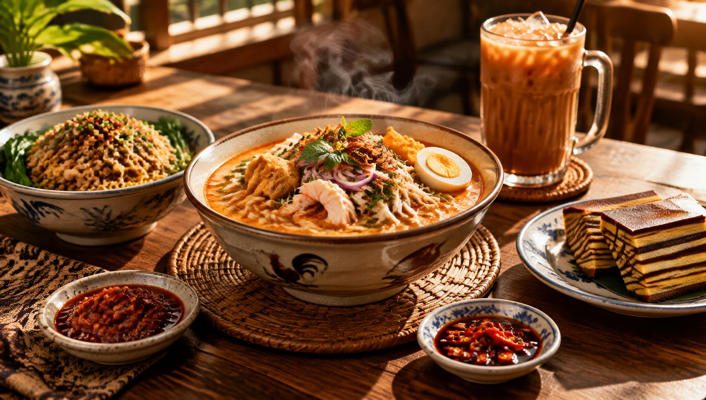

Fresh from the wok, every morning
Real Sarawak flavours,
no queue required.
Catalina Foodie's House brings the kopitiam stalls of Kuching to your door — kolo mee tossed to order, laksa simmered the slow way, and kek lapis cut fresh every morning.

Open Tue–Sun · 7am – 2pm
12 Carpenter Street, Kuching
Started at a five-table stall on Carpenter Street
Catalina Foodie's House began in 2019 as a single stall run by two sisters who grew up helping in their father's kopitiam. Today we still make the noodles fresh each morning and only cook what we expect to sell — no freezers, no shortcuts. Every order supports the same family kitchen that started it all.
Straight from the kitchen
A taste of today's menu — see the full spread on the menu page.